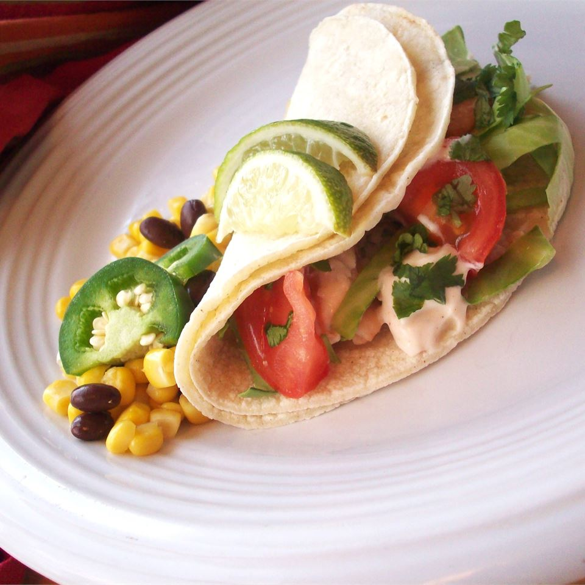

Fish Tacos

My favorite fish taco recipe
Ingredients:
Marinade
- 1/4 cup extra virgin olive oil
- 2 Tablespoons distilled white vinegar
- 2T fresh lime juice
- 2 teaspoons lime zest
- 1 1/2 teaspoons honey
- 2 cloves garlic, minced
- 1/2 teaspoon cumin
- 1/2 teaspoon chili powder
- 1 teaspoon seafood seasoning, like Old Bay
- 1/2 teaspoon ground black pepper
- 1 teaspoon hot pepper sauce, or to taste
- 1 lb tilapia fillets, cut into chunks
Dressing
- 1 (8oz) container sour cream
- 1/2 cup adobo sauce from chipotle peppers
- 2 Tablespoons fresh lime juice
- 2 teaspoons lime zest
- 1/4 teaspoon cumin
- 1/4 teaspoon chili powder
- 1/2 teaspoon Old Bay seasoning
- salt and pepper to taste
Toppings
- 1 (10 oz) package tortillas
- 3 ripe tomatoes
- 1 bag coleslaw
- 2 limes, cut in wedges